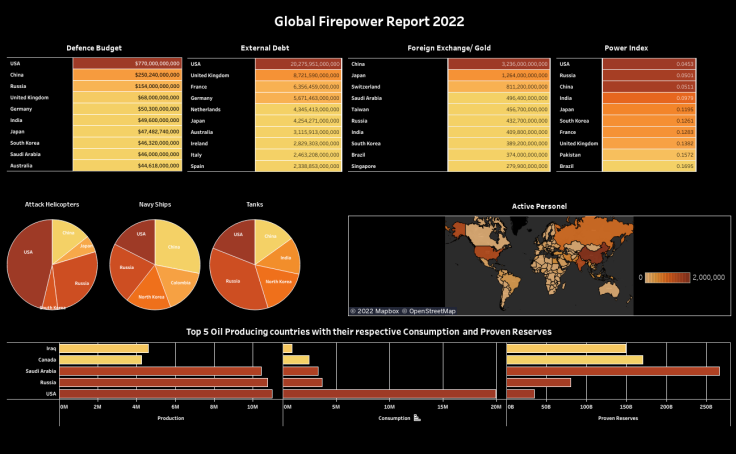

Using Microsoft SQL Server I analysed census data from India. Using commands such as FROM, WHERE, LIKE, AS, ORDER BY, GROUP BY enabled me to provide key insights into the data such as total population, growth in various states


Using Microsoft SQL Server, I created 2 Tables with fictious data about a football squad and performed various on the squad including age, position, salary and nationality. I used various commands, functions and clauses such as CREATE TABLE, SELECT, FROM, WHERE, OR, IN, AND, GROUP BY, ORDER BY, LIKE

Using a data set provided by D'Challenge for their May 2022 Linkedin Challenge I created a data visualation in Tableau showcasing the most powerful countries accross various metrics such as defence budget, their arsenal, debt & oil supplies.

Using data from Maven Analtics, I created a dashboard in Tableau based on results from a airline customer survey. In this dashboard I indentified various key metrics including the types of customers and their main reason for travel.
I also provided the ratings for various elements of service provided before and during the flights

A selection of other Tableau Visualation that I have created. I really enjoy working with Tableau and will continue to add to my catalogue.
My main areas of study over the next 12 months are Power BI and Python. I look forward to completing some online course in same and producing insightful outputs